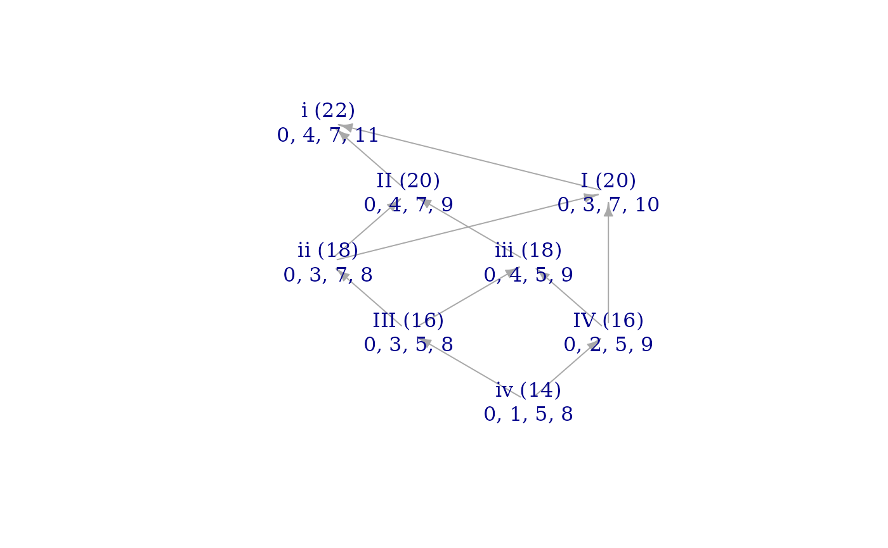

Voice leadings between members of a single set class are
well characterized by the Modal Color Theory arrangements
of makeineqmat(). Those arrangements do not tell the whole
story for relationships between inequivalent sets. (For instance,
under what circumstances are two brightnessgraph() structures
equivalent when set and goal belong to different set classes?)
Such relationships are described by the "anaglyph" arrangements
produced by this function. (The name for the arrangements alludes
to those 20th-century 3D movie glasses which produce a stereoscopic
effect by using lenses of different colors for each eye. Like those
glasses, the anaglyph arrangements "see" two scalar colors at once.)
Value
A matrix with 2*card+1 columns and k rows, where
k is either 4 times an entry of A050509
in the OEIS if card is even, or an entry of A033594
if card is odd.
Details
Note that, unlike for most other hyperplane arrangements, for
anaglyph arrangements card is only half the size of the data you're
working with, since anaglyph arrangements compare two sets of size
card. In general, when useing anaglyph ineqmats with other functions,
such as signvector() or howfree(), you should enter the two sets
to be compared as a single vector, i.e. c(set, goal). See the use of
howfree() in the example.
Examples
min7 <- c(0, 3, 7, 10)
maj7 <- c(0, 4, 7, 11)
just_min7 <- j(1, m3, 5, m7)
just_maj7 <- j(1, 3, 5, 7)
# The 12tet and just pairs have the same anaglyph signvector:
anaglyph_tetrachords <- make_anaglyph_ineqmat(4)
signvector(c(min7, maj7), ineqmat=anaglyph_tetrachords)
#> [1] -1 0 1 1 1 1 1 1 1 0 -1 1 1 1 1 1 -1 0 -1 1 0 1 0 1 -1
#> [26] 0 -1 1 1 1 1 -1 0 0 1 1 0 0 1 1
signvector(c(just_min7, just_maj7), ineqmat=anaglyph_tetrachords)
#> [1] -1 0 1 1 1 1 1 1 1 0 -1 1 1 1 1 1 -1 0 -1 1 0 1 0 1 -1
#> [26] 0 -1 1 1 1 1 -1 0 0 1 1 0 0 1 1
# They therefore have equivalent brightness graphs:
brightnessgraph(min7, maj7)

brightnessgraph(just_min7, just_maj7)
 # The pair is able to vary along two dimensions in anaglyph space:
howfree(c(min7, maj7), ineqmat="anaglyph")
#> [1] 2
# The pair is able to vary along two dimensions in anaglyph space:
howfree(c(min7, maj7), ineqmat="anaglyph")
#> [1] 2